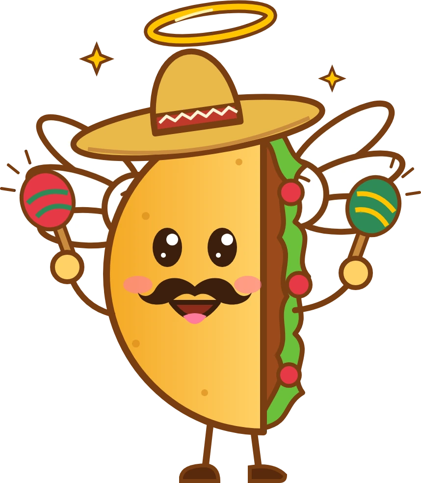
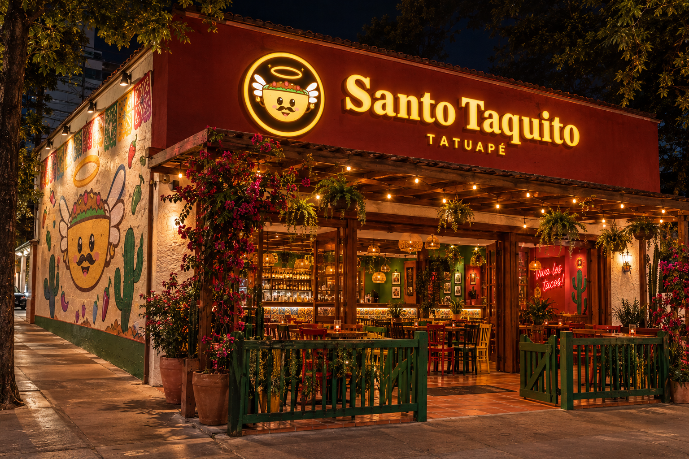
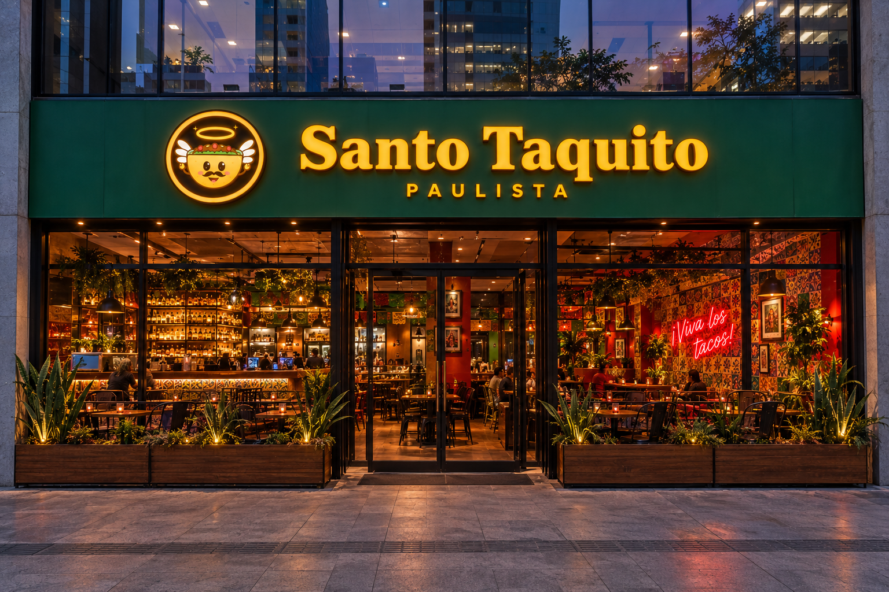
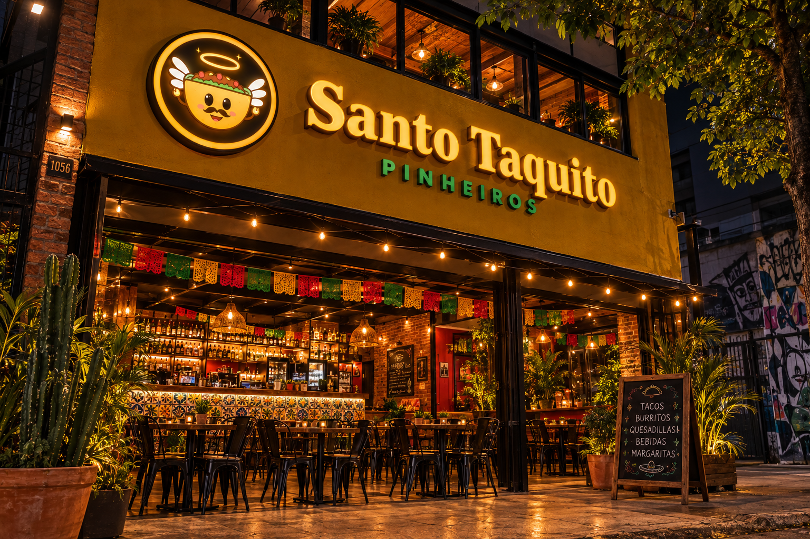

Cardapio
tacos, burritos, nachos, sobremesas e bebidas.
Cardapio
O QUE VOCÊ ENCONTRA AQUI
tacos, burritos, nachos, sobremesas e bebidas.

Margarita, micheladas e drinks à vontade por 3 horas.
Terça do taco, happy hour e combos da semana.
Promoções

